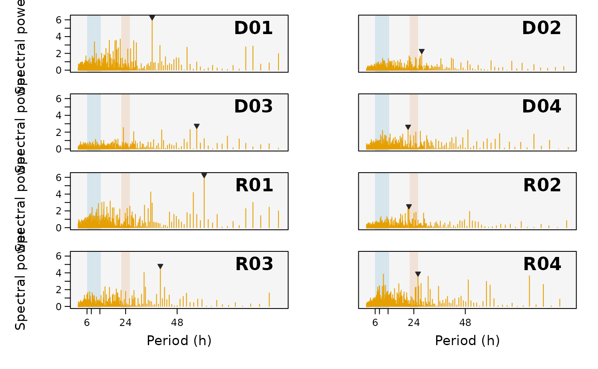

Computes and plots a periodogram per individual - spectral power against period - to
reveal dominant cyclic patterns in a detection time series, such as tidal (~6-12 h), diel (24 h)
or lunar rhythms in habitat use. One small panel is drawn per animal, with the tidal and diel
bands shaded and the dominant period marked. It is the global-spectrum complement of
plotScalogram (which resolves how those rhythms change through time).
Usage
plotPeriodogram(
data,
id.col = NULL,
timebin.col = NULL,
id.groups = NULL,
type = "detections",
method = c("fft", "lomb"),
detrend = c("none", "linear", "diff"),
gap.handling = c("zero", "mean", "locf", "interpolate"),
period.range = NULL,
axis.periods = c(48, 24, 12, 8, 6),
highlight.bands = TRUE,
min.days = 10,
shared.scale = TRUE,
color.pal = NULL,
background.color = "grey96",
ncol = NULL,
cex = 1,
file = NULL,
width = NULL,
height = NULL,
res = 300
)Arguments
- data
A
mobyDataor data frame of binned detections (must contain adetectionscolumn).- id.col
Name of the column containing animal IDs. Defaults to
"ID".- timebin.col
Name of the column containing time bins (in POSIXct format). Defaults to
"timebin".- id.groups
Optional named list of ID groups (one block of panels each).
- type
Response analysed:
"detections"(counts) or"presences"(binary per bin).- method
"fft"(default; periodogram on the gap-filled regular grid) or"lomb"(Lomb-Scargle on the observed samples; needs the lomb package).- detrend
One of
"none"(default; demean),"linear"(remove OLS trend), or"diff"(first difference - high-pass, use with care).- gap.handling
How internal gaps in the regular grid are filled for
method = "fft":"zero"(absence; default),"mean","locf"or"interpolate".- period.range
Optional length-2 numeric (hours) giving the period range to display and search for the dominant peak. If NULL (default), spans ~2 sampling intervals to twice the largest
axis.periodsvalue.- axis.periods
Reference periods (hours) marked on the x-axis. Defaults to c(48, 24, 12, 8, 6).
- highlight.bands
Logical; shade the tidal (~6-12.4 h) and diel (~24 h) bands. Defaults to TRUE.
- min.days
Discard individuals detected on fewer than this many distinct days. Defaults to 10.
Logical; share the y-axis (spectral power) across panels. Defaults to TRUE.
- color.pal
Colour for the spectrum. If NULL, a colourblind-safe colour is used.
- background.color
Panel background colour. Defaults to "grey96".
- ncol
Number of panel columns. If NULL, set from the number of individuals.
- cex
Global expansion factor for all plot text. Defaults to 1.
- file
Optional output file. If
NULL(the default), the figure is drawn on the current graphics device - the usual interactive behaviour. If a file path is supplied, moby opens a graphics device chosen from the file extension (.pdf,.svg,.png,.jpg/.jpeg,.tif/.tiffor.bmp), draws the figure to it, and closes the device automatically (also if an error occurs). For multi-page or batch workflows, keepfile = NULLand manage the device yourself (e.g.pdf(...); plot...(); dev.off()).- width, height
Output size in inches. Used only when
fileis supplied. IfNULL(default), a size is derived from the figure's structure (e.g. the number of individuals or panels). These defaults are sensible starting points, not guarantees: dense or unusual figures may still need you to setwidth/heightexplicitly. The two can be set independently.- res
Resolution in pixels per inch, for raster formats only (
.png,.jpg,.tif,.bmp); ignored for vector formats (.pdf,.svg). Used only whenfileis supplied. Defaults to 300.
Value
Invisibly, a tidy data frame with one row per individual: the dominant period (h), its
power, the false-alarm probability (method = "lomb" only), and whether it falls in the tidal or
diel band.
Details
The detection series is first laid on a complete, regularly-sampled time grid (via the
shared signal builder), so temporal gaps are represented rather than deleted - the ordinary FFT
assumes even sampling, and dropping absent bins corrupts the period axis. By default method = "fft" computes a raw periodogram (spec.pgram) on that grid, treating an
unobserved bin as absence (0). For data where absence-as-zero is not appropriate, method = "lomb" runs a Lomb-Scargle periodogram on the observed (time, value) pairs (requires the
lomb package) and reports an analytic false-alarm probability for the dominant peak.
Detrending defaults to "none" (mean removal only): the common first-difference detrend is a
high-pass filter that suppresses exactly the low-frequency diel/tidal peaks this tool looks for.
Examples
# Collapse detections into hourly counts per individual, then find dominant rhythms
binned <- aggregate(list(detections = rep(1L, nrow(rays))),
by = list(ID = rays$ID, timebin = rays$timebin), FUN = sum)
plotPeriodogram(binned, id.col = "ID", timebin.col = "timebin")
#> Warning: - 'id.col' converted to factor.
#>
#> Detection periodogram
#> ------------------------------------------------------
#> Individuals: 8 of 8 (min.days filter)
#> Sampling: dt = 60 min
#> Method: FFT periodogram; detrend: none
#> Period range: 2.0-96.0 h
#> Dominant peak: 0 tidal, 1 diel, 7 other
#> ------------------------------------------------------
